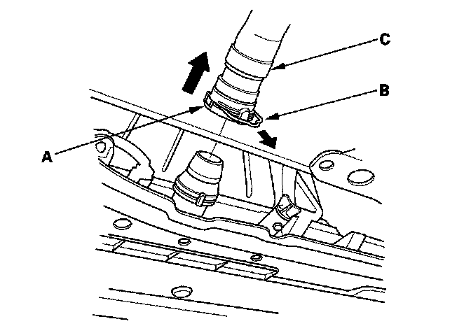
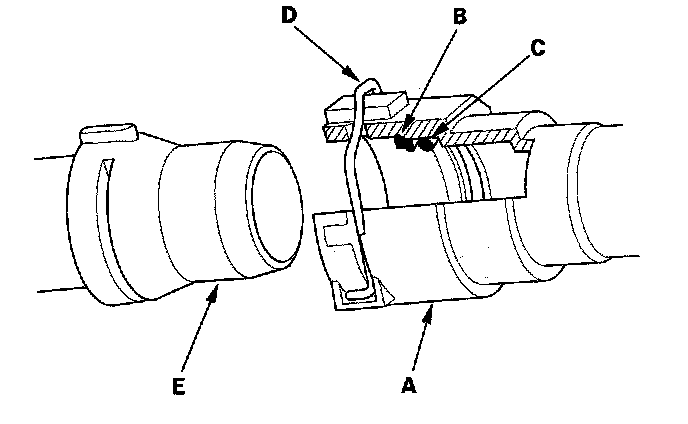
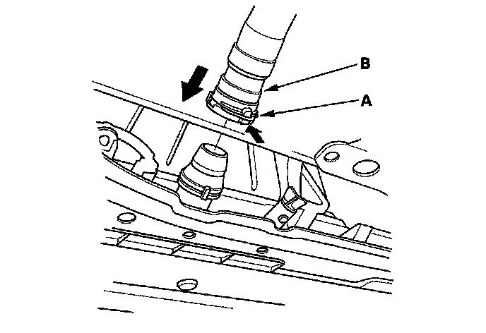

Radiator Hose: Service and Repair
Lower Radiator Hose Removal and InstallationRemoval
1. Drain the engine coolant.
2. Clean any dirt off the quick connector (A), radiator, and lower radiator hose.

3. Pull out the lock (B) by hand, then wiggle the quick connector, and remove it from the radiator. Do not use any tools to remove the quick connector.
4. Remove the clamp (C) from both ends of the lower radiator hose, and remove them from the thermostat and quick connector.
Installation
1. Check the quick connector (A) and set ring (B) for cracks or damage. If the connector and/or set ring are cracked or damaged, replace the connector.

2. Make sure the set ring is in place inside the quick connector. If the set ring is off the connector, replace the quick connector.
3. Replace the O-ring (C) in the quick connector.
4. Check the lock (D). If the lock is damaged or deformed, replace it. When installing the new lock to the connector, slide it straight down along the groove.
5. Install a new lower radiator hose on the quick connector, and install the clamp.
6. Clean the connecting surface of the radiator (E), then apply clean engine coolant around the connecting surface.
7. Push down the lock (A), then push the quick connector (B) onto the radiator until you hear it click.

8. Install the new lower radiator hose on the thermostat, and install the clamp.
9. Refill the radiator with engine coolant, and bleed the air from the cooling system with the heater valve open.